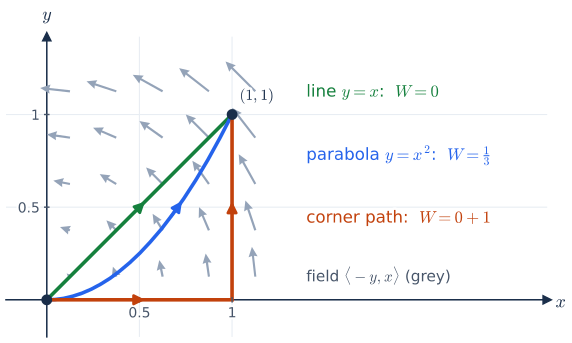
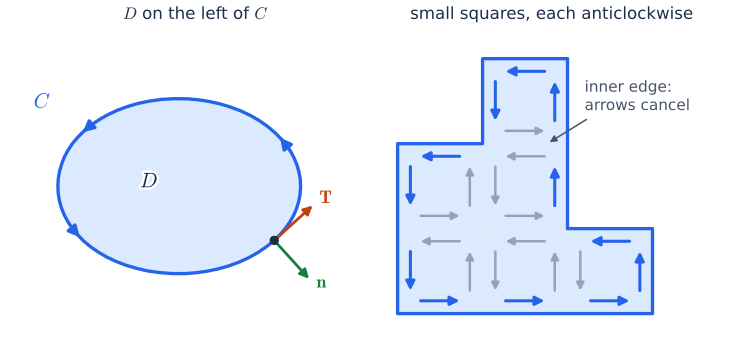
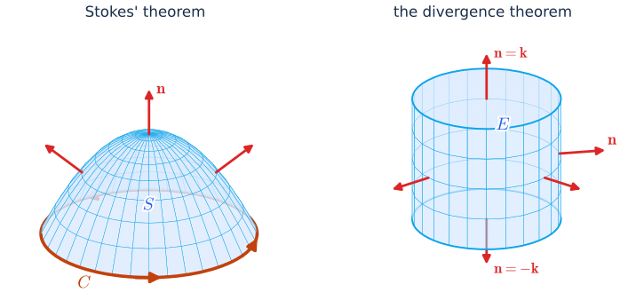

Do calculus with vector fields, the arrows of wind, flowing water, gravity and electricity. You will integrate fields along curves and over surfaces, measure how a flow turns and spreads with curl and divergence, and meet Green’s theorem, Stokes’ theorem and the divergence theorem, which turn out to be the Fundamental Theorem of Calculus in new forms.
⏱ 270 minYou need: Modules 1 to 19, especially the Fundamental Theorem of Calculus (Module 10), vectors, the dot and cross products and vector functions (Module 16), partial derivatives and the gradient (Module 17) and double and triple integrals (Module 19)
In this module you will
Draw and read vector fields in the plane and in space, and recognise gradient fields
Compute line integrals of functions and of vector fields, and explain how they depend on the curve and its direction
Test whether a field is conservative, find a potential, and evaluate line integrals with the fundamental theorem for line integrals
State Green’s theorem with its hypotheses, prove it for simple regions, and use it for circulation, flux and area
Compute curl, divergence, surface areas, surface integrals and flux, and explain what curl and divergence measure
State Stokes’ theorem and the divergence theorem, check them on examples, and explain the one pattern behind all the fundamental theorems
1
Vector fields
A weather map shows the wind as arrows: at each place an arrow points the way the wind blows, and its length shows how fast. The velocity of the water in a river, the pull of the Earth’s gravity and the electric field around a charged particle are of the same kind: each attaches a vector, a direction and a size, to every point of a region.
This last module integrates such fields along curves (the work done by a force along a path) and over surfaces (the rate at which a fluid flows through a net), and differentiates them, to measure how much a flow turns and how much it spreads out. Its main theorems, Green’s theorem, Stokes’ theorem and the divergence theorem, are the Fundamental Theorem of Calculus of Module 10 in new forms (Section 20.8).
Definition 20.1Vector field
Let D be a set of points in the plane. A vector field on D is a function F that assigns to each point (x,y) of D a vector
F(x,y)=⟨P(x,y),Q(x,y)⟩=Pi+Qj.
A vector field on a set E of points in space assigns to each point (x,y,z) of E a vector F(x,y,z)=⟨P,Q,R⟩. The functions P,Q and R, whose values are numbers, are the components of F.
F(x,y) reads “F of x, y”. A function whose values are numbers, such as the temperature of a metal plate, is called a scalar field when it must be kept apart from vector fields. To draw a vector field, draw the arrow F(x,y) with its tail at (x,y), for the points of a grid, all shortened by the same factor so that they do not overlap.
Example 20.1Rotation and source✓ Checked
Describe the vector fields F(x,y)=⟨−y,x⟩ and G(x,y)=⟨x,y⟩.
Start with numbers:
Point
F=⟨−y,x⟩
G=⟨x,y⟩
(1,0)
⟨0,1⟩
⟨1,0⟩
(0,1)
⟨−1,0⟩
⟨0,1⟩
(−1,0)
⟨0,−1⟩
⟨−1,0⟩
(0,−1)
⟨1,0⟩
⟨0,−1⟩
(2,2)
⟨−2,2⟩
⟨2,2⟩
At (1,0),F points straight up; a quarter turn further round, at (0,1), it points left. In general F(x,y)⋅⟨x,y⟩=−yx+xy=0, so away from the origin F is perpendicular to the position vector ⟨x,y⟩: it is tangent to the circle through (x,y) centred at the origin, and points anticlockwise round it. Its length, y2+x2, is the distance from the origin. So F is the velocity field of a wheel turning anticlockwise at one radian per second (Figure 20.1, left).
G points straight away from the origin, again with length equal to the distance from the origin. A flow with velocity G spreads out everywhere, since points further from the origin move outwards faster. This is an example of a source field. Its opposite, −G=⟨−x,−y⟩, gathers inwards and is an example of a sink field. Both fields are zero at the origin.
By Newton’s law of gravitation, a point mass M>0 at the origin pulls a mass m>0 at position r=⟨x,y,z⟩=0 with the force
F(x,y,z)=−∥r∥3GMmr,
where G is the gravitational constant. The force points towards the origin (the minus sign), and its length is GMm/∥r∥2: twice as far away, a quarter of the pull. Such an inverse square field (Figure 20.1, middle) also gives the electric field of a charged particle, by Coulomb’s law.
Module 17 met vector fields without the name: the gradient ∇f=⟨fx,fy⟩ of a differentiable function f(x,y) is a vector field, the gradient field of f. Where ∇f is nonzero, it points in the direction in which f increases fastest, and its length is that rate of increase. At a zero gradient all directional derivatives are zero. Along any differentiable level curve, the gradient is perpendicular to its tangent vector by the chain rule.
Example 20.2A gradient field✓ Checked
Find the gradient field of f(x,y)=x2+2y2, and check at the point (2,1) that it is perpendicular to the level curve of f through that point.
∇f(x,y)=⟨2x,4y⟩, so ∇f(2,1)=⟨4,4⟩. The level curve through (2,1) is the ellipse x2+2y2=6. Implicit differentiation (Section 6.4) gives 2x+4yy′=0, so its slope is y′=−x/(2y), which is −1 at (2,1): the tangent line there has direction ⟨1,−1⟩. Then ⟨4,4⟩⋅⟨1,−1⟩=0. For c>0, the arrows cross the ellipses x2+2y2=c at right angles and point outwards, to larger values of f (Figure 20.1, right).
Figure 20.1
Three vector fields. Left: the rotation field ⟨−y,x⟩ of Example 20.1, tangent to circles about the origin and longer further out; the dashed circle is a flow line. Middle: an inverse square field pointing towards the origin, like gravity, with all arrows drawn the same length to show only their directions. The open circle marks where the field is undefined. Right: the gradient field of f(x,y)=x2+2y2 (Example 20.2), crossing the level curves of f (orange ellipses) at right angles.
In a steady flow with velocity field F, a particle follows a flow line (or streamline): a curve r(t) whose velocity is the field at its position, r′(t)=F(r(t)). For the rotation field the origin is stationary and the other flow lines are circles. For a>0,r(t)=⟨acost,asint⟩ has r′(t)=⟨−asint,acost⟩, which is F at r(t). Finding flow lines means solving differential equations, as with the direction fields of Section 13.3.
Watch out
A picture samples the field at grid points. Compare lengths only when the arrows share one scale, and take exact values from the formula. And keep vectors and numbers apart: F(2,2)=⟨−2,2⟩ is a vector, while its length ∥F(2,2)∥=22 and the dot product F(2,2)⋅G(2,2)=0 are numbers.
2
Line integrals
A thin wire is bent into the upper half of the circle x2+y2=1, with lengths in metres, and its density at the point (x,y) is ρ(x,y)=1+y kilograms per metre: it is heavier towards the top. What is its mass? Cut the wire into n arcs of length π/n. On a short arc the density hardly changes, so the arc’s mass is about the density at its midpoint times its length. The midpoint of the ith arc is at the angle θi=(i−21)π/n, at height sinθi, so the mass is about
n
∑i=1n(1+sinθi)nπ
4
5.193937
16
5.144809
64
5.141793
256
5.141605
The sums settle down near 5.1416. Their limit is a new kind of integral, an integral along a curve.
A smooth pathC is traced by a function r(t),a≤t≤b, with a<b and a continuous derivative that is nonzero for a<t<b. The velocity may vanish at an endpoint. A piecewise smooth path is made of finitely many such pieces joined end to end. The path records the direction and order of travel, so it can cross itself or retrace a segment. An integral counts each passage. A stationary piece contributes zero. In a short time Δt the point r(t) moves about speed times time, ∥r′(t)∥Δt, which gives the arc length L=∫ab∥r′(t)∥dt of Module 16.
Definition 20.2Line integral of a function
Let C be a smooth curve traced by r(t),a≤t≤b, and let f be a function that is continuous on C. The line integral of f along C is
∫Cfds=∫abf(r(t))∥r′(t)∥dt.
For a piecewise smooth curve, add the line integrals along its smooth pieces.
∫Cfds reads “the integral of f along C, d s”; ds=∥r′(t)∥dt stands for the length of a short piece of the curve, and sums of f times such lengths, like those in the table, are Riemann sums (Module 9) of the integral on the right. With f=1 the line integral is the length of C; with a density, the mass of a wire along C; and dividing by the length of C, when it is positive, gives the average of f along C.
Example 20.3The mass of a wire✓ Checked
Find the mass of the wire above, and the height of its centre of mass.
Trace the semicircle by r(t)=⟨cost,sint⟩,0≤t≤π. Then r′(t)=⟨−sint,cost⟩ and ∥r′(t)∥=sin2t+cos2t=1: the parameter t is the arc length. On the wire ρ=1+y=1+sint, so
the number that the sums approached. By symmetry the centre of mass lies on the y-axis. Its height is the first moment in y divided by the mass, as for a rod in Section 12.7, with yρds in place of xρ(x)dx. With ∫0πsin2tdt=π/2 (Exercise 10.12),
A uniform semicircular wire has its centre of mass at the height π1∫0πsintdt=2/π≈0.637 m; the heavier top lifts it.
The parameter does not matter. Trace the same wire twice as fast, with r(u)=⟨cos2u,sin2u⟩,0≤u≤π/2: now the speed is ∥r′(u)∥=2, and ∫0π/2(1+sin2u)⋅2du=π+2 again. Theorem 20.1 below explains why.
Work
A constant force F that moves an object along a straight displacement D does the work W=F⋅D (Module 16), and Section 12.6 integrated a force that varies along a straight line. Now let the force vary from point to point and the path curve. From t to t+Δt, an object moving along r(t) is displaced by about r′(t)Δt, so the force does work of about F(r(t))⋅r′(t)Δt. Adding these, and letting Δt→0, gives an integral.
Definition 20.3Line integral of a vector field
Let C be a smooth curve traced by r(t),a≤t≤b, and let F be a vector field that is continuous on C. The line integral of F along C is
∫CF⋅dr=∫abF(r(t))⋅r′(t)dt.
For a piecewise smooth path, add the integrals over its smooth pieces. If F is a force, this is the work it does on an object that moves along C.
Read it as “the integral along C of F dot d r”. Two other ways of writing it are common. With the unit tangent vector T=r′/∥r′∥ of Module 16, F⋅r′dt=(F⋅T)∥r′∥dt=(F⋅T)ds, so
∫CF⋅dr=∫CF⋅Tds,
the line integral of the tangential component of F: only the part of the force along the path does work. And in components, with F=⟨P,Q⟩ and r(t)=⟨x(t),y(t)⟩, the integrand is Px′(t)dt+Qy′(t)dt. Writing dx=x′(t)dt and dy=y′(t)dt,
∫CF⋅dr=∫CPdx+Qdy,
with +Rdz in space.
Example 20.4Work along three paths✓ Checked
Find the work done by the force F(x,y)=⟨−y,x⟩ on an object that moves from (0,0) to (1,1) (a) along the line y=x, (b) along the parabola y=x2, (c) along the x-axis to (1,0) and then straight up to (1,1).
(a) Take r(t)=⟨t,t⟩,0≤t≤1. Then F(r(t))=⟨−t,t⟩ and r′(t)=⟨1,1⟩, so F⋅r′=−t+t=0 and W=0. The line is a radius of the circles that F follows, so the force is perpendicular to the motion all the way.
(b) Take r(t)=⟨t,t2⟩. Then F(r(t))=⟨−t2,t⟩ and r′(t)=⟨1,2t⟩, so
W=∫01(−t2+2t2)dt=∫01t2dt=31.
(c) Two smooth pieces. Along the x-axis, r(t)=⟨t,0⟩: the force ⟨0,t⟩ is perpendicular to r′=⟨1,0⟩, so it does no work. Up the line x=1,r(t)=⟨1,t⟩: the force is ⟨−t,1⟩ and r′=⟨0,1⟩, so F⋅r′=1 and the work is ∫011dt=1. In all, W=0+1=1.
Three paths with the same ends give three different amounts of work, 0,31 and 1 (Figure 20.2).

Figure 20.2
The force field ⟨−y,x⟩ of Example 20.4 and three paths from (0,0) to (1,1). Along the line y=x (green) the force is perpendicular to the motion and does no work. Along the parabola y=x2 (blue) it does work 31. Along the corner path (orange) it does no work on the bottom edge and work 1 on the right edge.
Direction and parametrisation
Trace the parabola backwards, from (1,1) to (0,0):r(t)=⟨1−t,(1−t)2⟩,0≤t≤1. Now r′(t)=⟨−1,−2(1−t)⟩ and F(r(t))⋅r′(t)=(1−t)2−2(1−t)2=−(1−t)2, so the work is −31: going the other way, the force works against the motion wherever it helped before. Write −C for the curve C traced in the opposite direction.
Theorem 20.1Parametrisation and direction
Let C be a smooth curve traced by r(t),a≤t≤b. Let g be a function on [c,d] with a continuous derivative that is never 0, whose values fill [a,b], and let r~(u)=r(g(u)),c≤u≤d. Then r~ traces the same curve, and for every continuous field F and function f on C:
if g′>0,r~ traces C in the same direction, and gives the same line integral of F;
if g′<0,r~ traces −C, and ∫−CF⋅dr=−∫CF⋅dr;
in both cases it gives the same ∫Cfds: in particular ∫−Cfds=∫Cfds.
Proof
By the chain rule, r~′(u)=r′(g(u))g′(u). If g′>0, then g is increasing, with g(c)=a and g(d)=b, and the substitution t=g(u) (Theorem 10.7) gives
If g′<0, then g is decreasing, with g(c)=b and g(d)=a, so the same substitution gives ∫ba, which is −∫ab. For ∫Cfds, the speed is ∥r~′(u)∥=∥r′(g(u))∥∣g′(u)∣. When g′<0,∣g′∣=−g′, and this second minus sign cancels the one that comes from reversing the limits.
∎
A change of speed that preserves the ordered traversal leaves either integral unchanged. Reversing the traversal also leaves the scalar integral unchanged, while it negates the work integral. Tracing the path twice would count both traversals.
Watch out
Two slips. (1) Leaving out the speed: ∫Cfds is ∫abf(r(t))∥r′(t)∥dt, not ∫abf(r(t))dt. With ⟨cos2u,sin2u⟩,0≤u≤π/2, forgetting the speed 2 gives the wire a mass of (π+2)/2, half the truth. (2) Using the position instead of the velocity: in Example 20.4(b), the dot product of F with r(t)=⟨t,t2⟩ instead of r′(t) gives −t3+t3=0, and a wrong “work” of 0.
Compute itLine integrals with SymPy
Store a field and a path as SymPy matrices; .subs puts the path into the field, .diff(t) differentiates the path, and .dot takes the dot product:
Python
import sympy as sp
x, y, t = sp.symbols('x y t')
F = sp.Matrix([-y, x])
defwork(F, path, a, b):
"""The line integral of F along the path (x(t), y(t)), a <= t <= b."""
r = sp.Matrix(path)
on_path = F.subs({x: r[0], y: r[1]}, simultaneous=True)
return sp.integrate(on_path.dot(r.diff(t)), (t, a, b))
print(work(F, [t, t], 0, 1), work(F, [t, t**2], 0, 1))
print(work(F, [t, 0], 0, 1) + work(F, [1, t], 0, 1))
print(work(F, [1 - t, (1 - t)**2], 0, 1))
Output
0 1/3
1
-1/3
These are the works of Example 20.4 along the line, the parabola and the corner path, and along the parabola backwards. For ∫Cfds, multiply by the speed instead; here is the mass of the wire of Example 20.3:
Python
r = sp.Matrix([sp.cos(t), sp.sin(t)])
speed = sp.sqrt(r.diff(t).dot(r.diff(t)))
print(speed, sp.simplify(speed))
M = sp.integrate((1 + r[1])*sp.simplify(speed), (t, 0, sp.pi))
print(M, sp.N(M, 4))
Output
sqrt(sin(t)**2 + cos(t)**2) 1
2 + pi 5.142
SymPy does not use sin2t+cos2t=1 until sp.simplify asks it to. Finally, a picture: matplotlib’s quiver draws an arrow with components U, V at each point X, Y of a grid.
Python
import numpy as np
import matplotlib.pyplot as plt
X, Y = np.meshgrid(np.linspace(-0.2, 1.2, 8), np.linspace(-0.2, 1.2, 8))
plt.quiver(X, Y, -Y, X, color='grey') # the field <-y, x>
s = np.linspace(0, 1, 100)
plt.plot(s, s, s, s**2, [0, 1, 1], [0, 0, 1]) # the three paths
plt.gca().set_aspect('equal')
plt.show()
With an interactive matplotlib backend, the plot opens in a window and shows the field and the three paths, as in Figure 20.2.
3
Conservative fields
Work usually depends on the path, as Example 20.4 showed. For gravity near the ground it does not: lifting a book from the floor to a shelf takes the same work against gravity by any route. This section finds the fields with that property. For them a line integral is computed as in Module 10: find a function whose derivative is the integrand, and subtract its values at the ends.
Theorem 20.2The fundamental theorem for line integrals
Let C be a piecewise smooth curve traced by r(t),a≤t≤b, from the point A=r(a) to the point B=r(b). Let f be a function of two or three variables that is differentiable, with a continuous gradient, on an open region that contains C. Then
∫C∇f⋅dr=f(B)−f(A).
Proof
First let C be smooth, and let g(t)=f(r(t)) be the value of f at the moving point. By the chain rule of Module 17,
g′(t)=fxx′(t)+fyy′(t)+fzz′(t)=∇f(r(t))⋅r′(t)
(without the last term in the plane), and this is continuous on [a,b]. By the net change theorem (Theorem 10.5),
∫C∇f⋅dr=∫abg′(t)dt=g(b)−g(a)=f(B)−f(A).
If C is made of smooth pieces from A=A0 to A1, from A1 to A2, and so on to An=B, add the results for the pieces: the sum (f(A1)−f(A0))+⋯+(f(An)−f(An−1)) telescopes to f(B)−f(A).
∎
Definition 20.4Conservative field and potential
A vector field F on an open region D is conservative if F=∇f for a differentiable function f on D. Such an f is a potential function, or potential, of F.
As with antiderivatives, f+K is a potential too, for every constant K. For a continuous field on an open connected region (defined below), there are no others: if ∇f=∇g, Theorem 20.2 for h=f−g gives h(B)−h(A)=∫C0⋅dr=0 for any two points joined by a curve C.
By Theorem 20.2, the line integral of a continuous conservative field F=∇f depends only on the ends of the curve: it is independent of the path. In particular, along a closed curve, one that ends where it starts, B=A and the line integral is 0. A circle on the integral sign marks a closed curve: ∮CF⋅dr reads “the integral of F dot d r round C”.
Example 20.5Gravity is conservative✓ Checked
Show that the gravitational field F=−GMmr/∥r∥3 is the gradient of f=GMm/∥r∥ on space without the origin, and find the work that gravity does on the body of mass m as it moves from distance r1 to distance r2 from the origin, along any path that avoids the origin.
and in the same way for y and z. So ∇(1/∥r∥)=−r/∥r∥3, and ∇f=F. The value of f depends only on the distance from the origin, so by Theorem 20.2 the work is
W=f(B)−f(A)=GMm(r21−r11),
whatever the path: positive when the body falls closer (r2<r1), negative when it climbs away. Physicists call U=−f=−GMm/∥r∥ the potential energy, so the work done by gravity is the drop U(A)−U(B). When gravity is the only force, this work is also the gain in kinetic energy. The sum of kinetic and potential energies stays constant, hence the name “conservative”.
A region D, in the plane or in space, is open if around each of its points there is a disc (a ball, in space) that lies in D, and connected if any two of its points can be joined by a piecewise smooth curve in D.
Theorem 20.3Conservative fields and closed curves
Let F be a continuous vector field on an open connected region D. These three statements are equivalent: each implies the other two.
F is conservative on D.
∫CF⋅dr depends only on the ends of C, for piecewise smooth curves C in D.
∮CF⋅dr=0 for every piecewise smooth closed curve C in D.
Proof
1 ⇒ 2 is Theorem 20.2. 2 ⇒ 3: split a closed curve C at two of its points A and B into C1, from A to B, and C2, from B back to A. Both C1 and −C2 run from A to B, so by 2, ∫C1=∫−C2=−∫C2, and ∮C=∫C1+∫C2=0.3 ⇒ 2: if C1 and C2 both run from A to B, then C1 followed by −C2 is a closed curve, so 0=∫C1−∫C2.
2 ⇒ 1 (in the plane). Fix a point A of D. For each point (x,y) of D, let f(x,y)=∫CF⋅dr along any piecewise smooth curve C in D from A to (x,y); there is one, because D is connected, and by 2 the value does not depend on the choice. Since D is open, it contains a short horizontal segment through (x,y), from a point (x1,y) with x1<x to a point on the right of (x,y). For each point (x′,y) of this segment, choose C to run from A to (x1,y) and then along the segment to (x′,y); on the segment y is constant, so dy=0, and
f(x′,y)=f(x1,y)+∫x1x′P(s,y)ds.
The first term does not depend on x′, so Part 1 of the Fundamental Theorem (Section 10.4) gives fx(x,y)=P(x,y). A short vertical segment gives fy=Q in the same way. In space, a third segment gives fz=R. These partial derivatives are continuous because F is continuous, so f is differentiable by Module 17 and ∇f=F.
∎
A test for conservative fields
How can you tell whether F=⟨P,Q⟩ is conservative without finding a potential? If F=∇f, then P=fx and Q=fy, and Clairaut’s theorem (Module 17) says that the mixed partial derivatives of f agree.
Theorem 20.4A condition for conservative fields
If F=⟨P,Q⟩ is conservative on an open region D, and P and Q have continuous first partial derivatives on D, then
∂y∂P=∂x∂Qthroughout D.
Proof
Let F=∇f, so P=fx and Q=fy. Then fxy=Py and fyx=Qx are continuous on D, and Clairaut’s theorem gives fxy=fyx, that is, Py=Qx.
∎
So the rotation field ⟨−y,x⟩, with Py=−1 and Qx=1, is not conservative, as Example 20.4 found: the work from (0,0) to (1,1) depended on the path. Does the converse hold? Not always.
Example 20.6A field with a hole✓ Checked
Let F(x,y)=⟨x2+y2−y,x2+y2x⟩, on the plane without the origin.
(a) Show that ∂P/∂y=∂Q/∂x wherever F is defined.
(b) Find ∮CF⋅dr, where C is the unit circle, traced once anticlockwise.
(b) Take r(t)=⟨cost,sint⟩,0≤t≤2π. On C,x2+y2=1, so F(r(t))=⟨−sint,cost⟩, which is r′(t). So F⋅r′=sin2t+cos2t=1, and ∮CF⋅dr=2π.
(c) No. By Theorem 20.3, a conservative field has line integral 0 round every closed curve, and this one has 2π round C, although Py=Qx everywhere. On the right half-plane x>0, though, F is the gradient of θ(x,y)=arctan(y/x), the polar angle of Module 16 (differentiate to check). Going once round the origin increases the polar angle by 2π: that is the 2π of (b). On the whole plane without the origin there is no potential, because the angle cannot be defined continuously all the way round: somewhere it must jump by 2π.
What went wrong is a hole. The unit circle lies where F is defined, but it goes round a point, the origin, where F is not defined.
Definition 20.5Simply connected region
A simple curve has no repeated points, apart from the common start and end allowed for a simple closed curve. A region D of the plane is simply connected if it is connected and every simple closed curve in D encloses only points of D.
Informally, a simply connected region has no holes. A disc, a half-plane, the whole plane and the inside of any simple closed curve are simply connected; a ring between two circles, and the plane without the origin, are not.
Theorem 20.5A test for conservative fields
Let P and Q have continuous first partial derivatives on an open, simply connected region D of the plane, with
∂y∂P=∂x∂Qthroughout D.
Then F=⟨P,Q⟩ is conservative on D.
Section 20.4 shows why, with Green’s theorem. Example 20.6 shows that “simply connected” cannot be left out.
Watch out
Py=Qx on its own does not make a field conservative: check also that the region where P and Q have continuous partial derivatives is simply connected (Example 20.6). And compare the right derivatives, each component differentiated with respect to the other variable: for the rotation field ⟨−y,x⟩,Px=0=Qy, but Py=−1=1=Qx, and the field is not conservative.
Finding a potential
When the test says yes, find f by undoing the partial derivatives one variable at a time.
Example 20.7Finding a potential✓ Checked
Let F(x,y)=⟨ycosx+2xey,sinx+x2ey+2y⟩.
(a) Show that F is conservative on the plane.
(b) Find a potential f.
(c) Find the work done by F along the curve r(t)=⟨πt/2,t2⟩,0≤t≤1.
(a)Py=cosx+2xey and Qx=cosx+2xey are equal and continuous on the whole plane, which is simply connected, so by Theorem 20.5 F is conservative.
(b) Since fx=P,f is an antiderivative of P with respect to x, with y held fixed:
f(x,y)=ysinx+x2ey+g(y).
The “constant” of integration may depend on y, because y was held fixed. Now differentiate with respect to y and compare with Q:
fy=sinx+x2ey+g′(y)=sinx+x2ey+2y,
so g′(y)=2y and g(y)=y2+K. With K=0,
f(x,y)=ysinx+x2ey+y2.
Check: ∇f=F.
(c) The curve runs from r(0)=(0,0) to r(1)=(π/2,1). By Theorem 20.2, without integrating along the curve,
W=f(2π,1)−f(0,0)=1+4π2e+1−0=2+4π2e≈8.707.
Every other path from (0,0) to (π/2,1) gives the same work.
Watch out
Two slips. (1) Writing a plain constant C for the “constant” of integration with respect to x: it may depend on y, and here a plain constant would lose the term y2.(2) Integrating P with respect to x and Q with respect to y and adding the results: that counts the terms they share, ysinx+x2ey, twice, and the gradient of the sum is not F. Check a potential by computing its gradient.
4
Green’s theorem
The parabola and the line of Example 20.4 together make a closed curve: out along the parabola from (0,0) to (1,1), and back along the line. Round it, the rotation field ⟨−y,x⟩ does work 31 on the way out and 0 on the way back: 31 in all. The region between the two curves has area ∫01(x−x2)dx=61, and for this field ∂Q/∂x−∂P/∂y=1−(−1)=2 everywhere. And 31=2×61. This is no coincidence.
Here is the idea. Take a small square with lower left corner (x,y) and side h>0. The anticlockwise traversal goes up on the right and down on the left, so the vertical sides together contribute
∫yy+h[Q(x+h,v)−Q(x,v)]dv.
If the first partial derivatives are continuous, the bracket divided by h is close to Qx(x,y) throughout this short interval, by the Mean Value Theorem. The contribution is therefore about Qx(x,y)h2. The traversal goes right on the bottom and left on the top, so the horizontal sides contribute about −Py(x,y)h2 by the same argument. Thus the circulation is approximately (Qx−Py)h2, with an error small compared with h2.
For a region made of small squares (Figure 20.3), add these circulations. A shared edge is traced twice in opposite directions, so its contributions cancel. Only the boundary integral remains. The sum of (Qx−Py) times the square areas approximates the double integral of Qx−Py over the region.

Figure 20.3
Left: a region D and its boundary C, traced anticlockwise, so that D is on the left; at one point, the unit tangent T and the outward unit normal n. Right: the same idea in small squares, each traced anticlockwise. On every inner edge two arrows point in opposite directions (grey), so their line integrals cancel; only the outer boundary (blue) is left.
A simple closed curve C in the plane is positively oriented if it is traced anticlockwise, that is, so that the region it encloses is on your left as you walk along it.
Theorem 20.6Green’s theorem
Let C be a positively oriented, piecewise smooth, simple closed curve in the plane, and let D be the region made of C and the points it encloses. If P and Q have continuous first partial derivatives on an open region that contains D, then
∮CPdx+Qdy=∬D(∂x∂Q−∂y∂P)dA.
The proof below is for regions that Module 19 calls both type I and type II, such as discs, triangles and the region between the parabola and the line.
Proof of Green’s theorem for a region of type I and type II
It is enough to prove
∮CPdx∮CQdy=−∬D∂y∂PdAand=∬D∂x∂QdA,
and add. For the first, describe D as a type I region: a≤x≤b and g1(x)≤y≤g2(x). By Fubini’s theorem (Module 19), and then Part 2 of the Fundamental Theorem in y, with x held fixed,
Now go round C anticlockwise in four parts, some of which may be single points. Along the bottom, x runs from a to b and y=g1(x). Using a piecewise smooth parametrisation of this arc and substituting its x-coordinate into the integral gives ∫Pdx=∫abP(x,g1(x))dx. This only requires g1 to be continuous, so it also works for an arc with a vertical tangent at an endpoint. Up the right side, x=b does not change, so dx=0 and ∫Pdx=0. Along the top, the graph of g2 traced from x=b back to x=a,∫Pdx=−∫abP(x,g2(x))dx. Down the left side, dx=0 again. Adding the four parts,
For the second formula, describe D as a type II region, c≤y≤d and h1(y)≤x≤h2(y). In the same way, ∬DQxdA=∫cd[Q(h2(y),y)−Q(h1(y),y)]dy. Going round C anticlockwise traces the right edge x=h2(y) upwards and the left edge x=h1(y) downwards, while on the horizontal parts dy=0, so ∮CQdy is the same integral.
∎
Other regions. Green’s theorem holds as stated for every region bounded by a piecewise smooth simple closed curve, but the general proof is beyond this series. A region that can be cut into finitely many pieces of type I and type II follows by applying the proof to each piece and adding: each cut is traced twice, once in each direction, so the line integrals along the cuts cancel, as in Figure 20.3. The same cancellation gives Green’s theorem for a region with holes, when every boundary curve is traced with D on its left: the outer curve anticlockwise and the inner ones clockwise.
Why the test of Section 20.3 works. Let D be open and simply connected, with Py=Qx throughout D. A simple closed curve C in D encloses a region R that lies in D, since D has no holes, and Green’s theorem gives ∮CF⋅dr=±∬R(Qx−Py)dA=0 (the sign set by the direction of C). To include closed paths that cross or retrace themselves, first consider a closed polygonal walk in D. Split its edges at crossings and at the endpoints of any overlaps. The walk can be split at repeated vertices into simple polygonal loops and pairs of edges traced there and back. The loops give 0 by Green’s theorem, and the pairs cancel.
For a general piecewise smooth closed path, join successive points on it by short chords. The path is compact inside the open set D, so sufficiently short chords stay in D. On each smooth piece the resulting polygonal parametrisations approach the path uniformly, and their velocities approach its velocity uniformly away from the subdivision points, by continuity of r′. Hence the line integrals of the polygonal walks approach the line integral of the path. Each is 0, so the integral along the path is 0 as well. Theorem 20.3 now gives Theorem 20.5. For the field of Example 20.6, Green’s theorem cannot be used on the unit disc, which contains the origin, where the field is not defined.
Example 20.8A line integral made easy✓ Checked
Evaluate ∮C(xy−ex2)dx+(x2+3x+ln(1+y2))dy, where C is the circle x2+y2=4, traced anticlockwise.
A direct parametrisation produces terms such as 2e4cos2tsint. Green’s theorem avoids integrating those terms along the circle. Here P=xy−ex2 and Q=x2+3x+ln(1+y2) have continuous partial derivatives on the whole plane, and
∂x∂Q−∂y∂P=(2x+3)−x=x+3.
The awkward terms are gone: ex2 does not depend on y, and ln(1+y2) does not depend on x. With D the disc of radius 2, in polar coordinates (Module 19),
The integral of x over the disc is 0, because the disc is symmetric about the y-axis and x is odd: in polar form, ∫02πcosθdθ=0.
Circulation and flux
Since Pdx+Qdy=F⋅Tds, the left side of Green’s theorem is ∮CF⋅Tds, the circulation of F round C. If F is the velocity of a fluid, it measures how strongly the fluid flows along C, round the loop.
The other natural question is how much fluid flows out across C, and only the normal component of the velocity carries fluid across. Turning the unit tangent T=⟨x′,y′⟩/∥r′∥ a quarter turn clockwise gives the outward unit normal
n=∥r′(t)∥⟨y′(t),−x′(t)⟩,
which points away from D, because D is on the left. On the unit circle traced by ⟨cost,sint⟩, for example, n=⟨cost,sint⟩. The flux of F across C is ∮CF⋅nds.
Theorem 20.7Green’s theorem, flux form
Under the hypotheses of Theorem 20.6, with n the outward unit normal of C,
∮CF⋅nds=∬D(∂x∂P+∂y∂Q)dA.
Proof
Since nds=⟨y′(t),−x′(t)⟩dt,
F⋅nds=(Py′(t)−Qx′(t))dt=−Qdx+Pdy.
The field ⟨−Q,P⟩ also has components with continuous partial derivatives, and Green’s theorem for it is
∮C(−Q)dx+Pdy=∬D(∂x∂P−∂y∂(−Q))dA,
which is the formula.
∎
If F is the velocity of a two-dimensional flow, the flux is the net rate at which fluid leaves D across C (in area per unit time), and Px+Qy, which Section 20.5 names the divergence, measures how fast the flow spreads out from each point. For the source G=⟨x,y⟩ and the unit circle, G⋅n=cos2t+sin2t=1, so the flux is 2π, and indeed ∬D(1+1)dA=2π; the circulation is 0, since G is perpendicular to the circle. For the rotation field it is the other way round: circulation 2π, flux 0.
Try it
Choose a field, then move the circle with the sliders, or drag on the picture to move its centre. The readout gives the circulation ∮F⋅dr (anticlockwise) and the outward flux ∮F⋅nds round the circle, each beside the double integral over the disc that Green’s theorem says it equals, all computed numerically. With the rotation field the circulation is 2πr2 wherever the circle is, because Qx−Py=2 everywhere. With the shear ⟨y,0⟩ every arrow is horizontal, yet the circulation is −πr2. With the gradient field the circulation is 0 for every circle (Theorem 20.3). Then choose your own field, type P = -y/(x^2+y^2) and Q = x/(x^2+y^2) (Example 20.6), and compare circles with the origin strictly outside and strictly inside. With radius 1, try centres (2,1) and (0.3,0.2), respectively. The circulation is 0 outside and 2π inside (Exercise 20.11). Although Qx−Py=0 wherever the field is defined, a disc containing the origin fails the hypotheses of Green’s theorem. The readout can flag a mismatch or withhold unreliable estimates. Numerical agreement alone cannot check the hypotheses.
Area from the boundary
Under the hypotheses of Green’s theorem, if Qx−Py=1, the area of D is a line integral round its positively oriented boundary. Three simple choices are P=0,Q=x;P=−y,Q=0; and P=−y/2,Q=x/2:
A=∮Cxdy=−∮Cydx=21∮Cxdy−ydx.
Example 20.9The area of an ellipse✓ Checked
Find the area enclosed by the ellipse x=acost,y=bsint,0≤t≤2π, where a,b>0.
The ellipse is traced anticlockwise. With dx=−asintdt and dy=bcostdt,
Planimeters. A planimeter is a mechanical instrument that measures the area of a region drawn on paper, such as a field on a map, while its pointer traces the boundary once. With the fixed pivot outside the region, the measuring wheel accumulates a line integral as the pointer goes round. Green’s theorem relates this integral to the area.
Polygons. For a polygon the area formula becomes a sum. Along the edge from (x1,y1) to (x2,y2), traced by x=x1+t(x2−x1),y=y1+t(y2−y1),0≤t≤1,
because on expanding, the terms with t cancel. So each edge contributes x1y2−x2y1, and a simple polygon with corners (x1,y1),…,(xn,yn), listed anticlockwise, has area
A=21k=1∑n(xkyk+1−xk+1yk),
where (xn+1,yn+1) means the first corner (x1,y1) again. This is the shoelace formula (or surveyor’s formula), which mapping and graphics software uses for the areas of polygons.
Compute itAreas from corners
The shoelace formula is a few lines of Python:
Python
import math
defarea(corners):
"""The signed area of a simple polygon, with corners in boundary order."""
n = len(corners)
total = 0for k inrange(n):
x1, y1 = corners[k]
x2, y2 = corners[(k + 1) % n] # next corner; wraps round to the first
total += x1*y2 - x2*y1
return total/2print(area([(0, 0), (2, 0), (2, 1), (0, 1)]))
print(area([(0, 0), (0, 1), (2, 1), (2, 0)]))
print(area([(0, 0), (4, 0), (4, 3), (2, 1), (0, 3)]))
Output
2.0
-2.0
8.0
The first rectangle, 2 by 1, has area 2. The second is the same rectangle with its corners listed clockwise: the sign of the answer gives the direction of the boundary. The third polygon has a notch cut into its top; the formula does not need it to be convex. The area of a regular polygon inscribed in the unit circle approaches the area of the disc as the number of sides increases:
Python
for n in [6, 100, 10000]:
step = 2*math.pi/n # angle between neighbouring corners
corners = [(math.cos(k*step), math.sin(k*step)) for k inrange(n)]
print(f"{n} {area(corners):.10f}")
print(f"{math.pi:.10f}")
The values, shown to ten decimal places, approach π, the area of the unit disc.
5
Curl and divergence
The two forms of Green’s theorem have two integrands, Qx−Py and Px+Qy. In space they become the curl and the divergence. Write ∇, read “del”, for the vector of partial derivative operators ⟨∂/∂x,∂/∂y,∂/∂z⟩. Applied to a function f it gives the gradient ∇f; “crossed” and “dotted” with a field F, it gives the following.
Definition 20.6Curl and divergence
Let F=⟨P,Q,R⟩ be a vector field whose components have first partial derivatives. The curl of F is the vector field
curlF=∇×F=⟨Ry−Qz,Pz−Rx,Qx−Py⟩,
and the divergence of F is the function
divF=∇⋅F=Px+Qy+Rz.
Here the subscripts are partial derivatives: Ry=∂R/∂y, and so on.
Read “curl F” (or “del cross F”) and “div F” (or “del dot F”). The curl is the cross product of Module 16, with the operators of ∇ in the middle row of the determinant:
∇×F=i∂/∂xPj∂/∂yQk∂/∂zR,
where “∂/∂y times R” means ∂R/∂y. The curl is a vector field; the divergence is a scalar field. A field ⟨P(x,y),Q(x,y)⟩ in the plane counts as the field ⟨P,Q,0⟩ in space, and then
curlFdivF=⟨0,0,Qx−Py⟩,=Px+Qy,
the two integrands of Green’s theorem. Its two forms read
∮CF⋅Tds∮CF⋅nds=∬D(curlF)⋅kdA,=∬DdivFdA.
Example 20.10Curl and divergence✓ Checked
(a) Find the curl and the divergence of F=⟨xy,yz,zx⟩. (b) Find Qx−Py and Px+Qy for the rotation field ⟨−y,x⟩, the source ⟨x,y⟩, the sink ⟨−x,−y⟩, the shear ⟨y,0⟩ and the constant field ⟨1,0.5⟩ of the demonstration in Section 20.4.
(a) With P=xy,Q=yz and R=zx:
curlFdivF=⟨0−y,0−z,0−x⟩=⟨−y,−z,−x⟩,=y+z+x.
(b) One derivative at a time:
Field
Qx−Py
Px+Qy
rotation ⟨−y,x⟩
1−(−1)=2
0
source ⟨x,y⟩
0
1+1=2
sink ⟨−x,−y⟩
0
−2
shear ⟨y,0⟩
0−1=−1
0
constant ⟨1,0.5⟩
0
0
So round every circle of radius r, Green’s theorem predicts circulation 2πr2 and flux 0 for the rotation field, circulation 0 and flux 2πr2 for the source, and circulation −πr2 for the shear, wherever the circle is.
What curl and divergence measure
Rotation. Put a tiny paddle wheel into a flowing fluid. It turns if the fluid pushes harder on the paddles on one side of its axle than on the other. Green’s theorem makes this precise. Suppose F has continuous first partial derivatives near P0. Let Cr be the circle of radius r>0 about P0, traced anticlockwise, and Dr its disc. Then ∮CrF⋅dr=∬Dr(Qx−Py)dA. If Qx−Py is continuous, then on a small enough disc it differs from its value at P0 by less than any number ε>0 you choose, so the double integral differs from that value times πr2 by less than επr2. Dividing by the area and letting r→0:
(curlF)(P0)⋅k=r→0limπr21∮CrF⋅dr.
The curl measures the limiting circulation per unit area. In space, Stokes’ theorem (Section 20.7) gives the component along n when the small loop lies in a plane with unit normal n. The largest signed value occurs when n points along the curl, if the curl is nonzero. This explains the paddle-wheel picture in the limit of a tiny wheel. For a rigid rotation the curl is twice the angular velocity: a wheel turning about the z-axis at ω radians per second has velocity field v=⟨−ωy,ωx,0⟩, and curlv=⟨0,0,ω−(−ω)⟩=⟨0,0,2ω⟩.
Expansion. In the same way, the flux form of Green’s theorem gives
(divF)(P0)=r→0limπr21∮CrF⋅nds.
So the divergence is the rate at which the flow carries fluid out of small regions, per unit of area (per unit of volume, in space, by the divergence theorem of Section 20.7). Where divF>0 the fluid spreads out, as from the source; where it is negative the fluid gathers, as into the sink. An incompressible flow with no sources or sinks has divF=0: what flows into a region flows out again.
Watch out
A field can turn without arrows that go round, and arrows that go round need not turn. The shear ⟨y,0⟩ has parallel arrows, yet curlF=⟨0,0,−1⟩: above the x-axis the fluid moves to the right, faster further up, so a paddle wheel is pushed harder at its top than at its bottom, and it turns clockwise. The arrows of the field of Example 20.6 go round the origin, yet its curl is 0 wherever it is defined: the limiting circulation per unit area around a point away from the origin is zero.
Two identities
Theorem 20.8Two identities
If f has continuous second partial derivatives, then curl(∇f)=0. If the components of F have continuous second partial derivatives, then div(curlF)=0.
Proof
With ∇f=⟨fx,fy,fz⟩,
curl(∇f)=⟨fzy−fyz,fxz−fzx,fyx−fxy⟩,
and each component is 0 by Clairaut’s theorem. In the same way,
and the six terms cancel in pairs, by Clairaut’s theorem again.
∎
For a field F with continuous first partial derivatives, a nonzero curl rules out a potential by the first identity. Conversely, if curlF=0 on an open, simply connected region of space, then F is conservative. Here simply connected means connected and every closed path can be continuously shrunk to a point within the region. For example, a ball and space with one point removed are simply connected. A loop round a removed line cannot shrink to a point without crossing the line. Section 20.7 gives the idea behind the converse.
By the second identity, a field with nonzero divergence, such as ⟨x,y,z⟩, cannot be the curl of a field with continuous second partial derivatives.
Compute itCurl and divergence with SymPy
SymPy’s sympy.vector module knows the operators of this section. It works in a coordinate system, here called N, with coordinates N.x, N.y, N.z and unit vectors N.i, N.j, N.k:
Python
import sympy as sp
from sympy.vector import CoordSys3D, curl, divergence, gradient
N = CoordSys3D('N')
x, y, z = N.x, N.y, N.z
F = x*y*N.i + y*z*N.j + z*x*N.k # Example 20.10print(curl(F))
print(divergence(F))
print(divergence(curl(F)))
is_conservative checks only that the curl is 0, and scalar_potential finds a potential by integrating, as in Example 20.7. Neither looks at the region:
Python
V = -y/(x**2 + y**2)*N.i + x/(x**2 + y**2)*N.j # Example 20.6print(is_conservative(V))
Output
True
SymPy says yes, but Example 20.6 showed that this field is not conservative on the plane without the origin. The hypothesis “simply connected” is yours to check.
6
Surfaces and surface integrals
Parametric surfaces
A curve in space is traced by a point that depends on one parameter, r(t). A surface is traced by a point that depends on two.
Definition 20.7Parametric surface
A parametric surfaceS is the set of points
r(u,v)=⟨x(u,v),y(u,v),z(u,v)⟩
for (u,v) in a region D of the uv-plane. The function r is a parametrisation of S.
Three examples recur. The radius a and cylinder height h are positive:
the sphere of radius a centred at the origin, from the spherical coordinates of Module 19 with ρ=a:r(φ,θ)=⟨asinφcosθ,asinφsinθ,acosφ⟩,0≤φ≤π,0≤θ≤2π;
the cylinder x2+y2=a2,0≤z≤h:r(θ,z)=⟨acosθ,asinθ,z⟩,0≤θ≤2π,0≤z≤h;
the graph of a function z=g(x,y) over a region D:r(x,y)=⟨x,y,g(x,y)⟩, with x and y themselves as the parameters.
Holding v fixed and letting u vary traces a curve on S, a grid curve, whose tangent vector is the partial derivative ru=∂r/∂u (differentiate each component); holding u fixed gives a grid curve with tangent vector rv. When these vectors are linearly independent, they span the tangent plane of S. Their cross product
N=ru×rv
is perpendicular to S: a normal vector (Figure 20.4). Here we use smooth patches with continuously differentiable parametrisations on a neighbourhood of D and ru×rv=0 in its interior. Each patch is traced once apart from possible repeats along its edges. A piecewise smooth surface is made of finitely many such patches that meet only along edges or at points.
Example 20.11Normal vectors of a sphere and of a graph✓ Checked
Find ru×rv (a) for the sphere of radius a, and (b) for the graph of z=g(x,y).
(a) Here rφ=⟨acosφcosθ,acosφsinθ,−asinφ⟩ and rθ=⟨−asinφsinθ,asinφcosθ,0⟩. The cross product, simplified with cos2θ+sin2θ=1, is
For 0<φ<π this is a positive multiple of r, so it points outwards. At the poles it is zero, because the longitude grid curve collapses there. Its length is asinφ⋅a=a2sinφ.
(b) Here rx=⟨1,0,gx⟩ and ry=⟨0,1,gy⟩, so rx×ry=⟨−gx,−gy,1⟩. It points upwards (its z-component is 1), and its length is 1+gx2+gy2.
Figure 20.4
A parametric surface: the sphere of Example 20.11. A small rectangle of sides Δφ and Δθ in the φθ-plane (left) is carried by r to a small patch of the sphere (right, orange), close to the parallelogram spanned by rφΔφ and rθΔθ. The normal vector N=rφ×rθ is perpendicular to the sphere, and ∥N∥ΔφΔθ is close to the patch’s area.
Surface area
Cut D into small rectangles of sides Δu and Δv. The one with corner (u,v) is carried to a small curved patch of S with a corner at r(u,v). Since r(u+Δu,v)−r(u,v)≈ruΔu and r(u,v+Δv)−r(u,v)≈rvΔv, the patch is close to the parallelogram spanned by ruΔu and rvΔv, whose area is ∥ru×rv∥ΔuΔv (Module 16). Adding over the patches:
Definition 20.8Surface area
If S is traced once by a smooth parametrisation r(u,v) over a bounded region D with piecewise smooth boundary, its surface area is
A(S)=∬D∥ru×rv∥dA.
“Traced once” allows repeats on the edge of D: the sphere’s parametrisation gives the points with θ=0 and θ=2π twice, and each pole for a whole edge of D, but those repeats have zero surface area. For a piecewise smooth surface, add the areas of its patches. For a smooth graph z=g(x,y), by Example 20.11(b),
A(S)=∬D1+gx2+gy2dA.
Example 20.12Two surface areas✓ Checked
(a) Find the area of the sphere of radius a. (b) Find the area of the dome z=1−x2−y2,z≥0.
(a) By Example 20.11, ∥rφ×rθ∥=a2sinφ, so
A=∫02π∫0πa2sinφdφdθ=2πa2[−cosφ]0π=4πa2,
the familiar formula, which Module 12 also found from a surface of revolution.
(b) The dome is the graph of g(x,y)=1−x2−y2 over the unit disc D (where z≥0). With gx=−2x and gy=−2y, in polar coordinates,
A=∬D1+4x2+4y2dA=∫02π∫011+4r2rdrdθ.
Substitute w=1+4r2,dw=8rdr:∫011+4r2rdr=81∫15wdw=121(55−1). So
A=6π(55−1)≈5.330,
against π≈3.142 for the flat disc under the dome.
Surface integrals
Think of a thin shell whose density varies across its surface. Approximate its mass by splitting it into patches and multiplying each patch’s area by the density at one point. The limit uses the same area factor as before, with an extra factor for the density.
Definition 20.9Surface integral of a function
Let S be traced once by a smooth parametrisation r(u,v),(u,v) in D, and let f be continuous on S. The surface integral of f over S is
∬SfdS=∬Df(r(u,v))∥ru×rv∥dA.
As ∫Cfds adds up f times short lengths, ∬SfdS adds up f times small areas dS=∥ru×rv∥dA. With f=1 it is the area of S; with a density, it gives the mass of a thin shell. Divide by the area, if it is positive, to get the average of f. For a surface made of several patches, add their integrals. A smooth change of parameters multiplies the cross product by its signed Jacobian determinant, by the chain rule. The length picks up the absolute value, exactly the factor in Module 19’s change of variables formula. This makes the integral independent of the choice of smooth parameters.
Example 20.13The centre of mass of a shell✓ Checked
Find the height of the centre of mass of a thin shell of uniform positive density in the shape of the hemisphere x2+y2+z2=a2,z≥0, with a>0.
By symmetry xˉ=yˉ=0. With a constant density, zˉ is the average of z over the shell, zˉ=A1∬SzdS, where A=2πa2 is half the area of the sphere. With the sphere’s parametrisation and 0≤φ≤π/2,
So zˉ=πa3/(2πa2)=a/2: the centre of mass is exactly halfway up. For a uniform solid hemisphere the horizontal slices have area π(a2−z2), which decreases with height. Its centre of mass is lower, at ∫0a(a2−z2)dz∫0az(a2−z2)dz=3a/8.
Orientation and flux
A sphere, or a dome, has two sides. To orient a smooth surface, choose a unit normal n that varies continuously and points towards the chosen side. On a piecewise smooth surface, the choices on adjoining patches must pick the same side, though the normals may differ at a crease. A closed surface such as a sphere or the surface of a cube has no edge. When it bounds a solid, the outward orientation points away from that solid. On a regular patch, n=(ru×rv)/∥ru×rv∥ chooses one side and −n chooses the other. Not every surface has two sides: a Möbius strip, a strip of paper given half a twist before its ends are joined, has only one, and cannot be oriented.
Now let a fluid with velocity F flow through S, as water through a net. Through a small, nearly flat patch of area ΔS with unit normal n, the fluid that crosses in a short time Δt fills a slanted box with base ΔS and height ∣F⋅n∣Δt. The signed rate across the patch is (F⋅n)ΔS, in volume per unit time. A negative sign means flow against the chosen normal. The tangential part carries nothing across. Adding over the patches:
Definition 20.10Flux
Let S be an oriented surface with unit normal n, and let F be a continuous vector field on S. The flux of F across S is
∬SF⋅dS=∬SF⋅ndS.
To compute it, trace S once by r(u,v),(u,v) in D, with ru×rv pointing to the side that n chooses. Then the lengths cancel,
ndS=∥ru×rv∥ru×rv∥ru×rv∥dA=(ru×rv)dA,
and so
∬SF⋅dS=∬DF(r(u,v))⋅(ru×rv)dA.
If ru×rv points to the other side, the flux is minus this. The same definition gives electric flux, magnetic flux and the flux of heat across a surface.
Example 20.14Flux out of a sphere✓ Checked
Find the flux of F(x,y,z)=⟨x,y,z⟩ outwards across the sphere of radius a centred at the origin.
By Example 20.11, rφ×rθ=asinφr(φ,θ) points outwards away from the poles, and F(r(φ,θ))=r(φ,θ), whose length is a. So F⋅(rφ×rθ)=asinφ∥r∥2=a3sinφ, and
∬SF⋅dS=∫02π∫0πa3sinφdφdθ=4πa3.
The same without the parametrisation: on the sphere n=r/a, so F⋅n=∥r∥2/a=a everywhere, and the flux is a times the area, a⋅4πa2=4πa3.
Watch out
Two slips with surfaces. (1) Forgetting ∥ru×rv∥ in ∬SfdS: it is the factor that turns dudv into area, as ∥r′(t)∥ turns dt into length. (2) In a flux integral, using the length ∥ru×rv∥ where the vector ru×rv belongs, or not checking which way it points: with rθ×rφ=−rφ×rθ, the normal of the sphere points inwards, and the flux of Example 20.14 comes out as −4πa3. The flux changes sign when the orientation is reversed, as ∫CF⋅dr does when C is reversed, while ∬SfdS, like ∫Cfds, does not.
7
Stokes’ theorem and the divergence theorem
Stokes’ theorem
Green’s theorem relates the circulation round a closed curve in the plane to the curl inside it. The same circle in space can be the edge of a flat disc or a curved dome. When both surfaces are oriented compatibly and the field is smooth on a neighbourhood of each, Stokes’ theorem says the circulation round the circle equals the flux of the curl through either surface.
The boundary curve C of an oriented surface S is positively oriented if, when you walk along C with your head pointing in the direction of n, the surface is on your left. For a flat disc, curl the fingers of your right hand in the direction of C and your thumb points along n (the right-hand rule; Figure 20.5, left).
Theorem 20.9Stokes’ theorem
Let S be an oriented, piecewise smooth surface whose boundary is a simple closed, piecewise smooth curve C with positive orientation. If the components of F have continuous first partial derivatives on an open region of space that contains S, then
∮CF⋅dr=∬ScurlF⋅dS.
When S is a flat region of the xy-plane, oriented upwards, n=k and curlF⋅k=Qx−Py. Stokes’ theorem becomes Green’s theorem in its circulation form. More generally, the boundary integral adds the contributions of all boundary curves with their induced orientations. In particular it is 0 for a closed surface. These extensions use cancellation along cuts between patches.
The idea of the proof. Cut S into small, nearly flat patches. Round each patch the circulation is about (curlF⋅n)ΔS: the small-square estimate of Section 20.4, made in the plane of the patch, with its normal n in place of k. Add over the patches. An edge shared by two patches is traced once in each direction, so its contributions cancel, and what is left is the circulation round C; meanwhile the terms (curlF⋅n)ΔS add up to about ∬ScurlF⋅dS. For a surface that is a graph, a longer computation with the chain rule reduces Stokes’ theorem to Green’s theorem; the general proof is beyond this series.
Example 20.15Stokes’ theorem on a dome✓ Checked
Let F=⟨z,x,y⟩, and let S be the dome z=1−x2−y2,z≥0, oriented upwards. Check Stokes’ theorem by computing both sides.
The line integral. The edge of the dome is the unit circle in the xy-plane. For the upward orientation of the graph, the region projects to the left of an anticlockwise traversal of the rim, so the positive direction is anticlockwise seen from above: r(t)=⟨cost,sint,0⟩,0≤t≤2π. Then F(r(t))=⟨0,cost,sint⟩ and r′(t)=⟨−sint,cost,0⟩, so
∮CF⋅dr=∫02πcos2tdt=π.
The surface integral. With P=z,Q=x and R=y,
curlF=⟨1−0,1−0,1−0⟩=⟨1,1,1⟩.
By Example 20.11(b) with g=1−x2−y2, the upward normal is ⟨−gx,−gy,1⟩=⟨2x,2y,1⟩, so
∬ScurlF⋅dS=∬D(2x+2y+1)dA
over the unit disc D. The terms 2x and 2y integrate to 0 by symmetry, which leaves the area of D:π. Both sides are π.
The flat unit disc, oriented upwards, has the same boundary, and on it curlF⋅k=1, so its flux is π as well. That is no accident: by Stokes’ theorem, the flux of curlF is the same through any two surfaces with the same oriented boundary, provided the field meets the hypotheses on both.

Figure 20.5
Left: Stokes’ theorem on the dome of Example 20.15. The normals point upwards, and the boundary circle is traced anticlockwise seen from above: walking along it with your head along the normals, the dome is on your left. Right: the divergence theorem on the solid cylinder of Example 20.16. The boundary has three pieces, the top, the bottom and the side, and on each the normal points outwards.
Why the test in space works. Suppose F has continuous first partial derivatives and zero curl on an open, simply connected region. If a loop bounds an oriented surface within the region, Stokes’ theorem gives zero circulation. For the general case, shrinking the loop to a point gives a continuous map of a disc into the region. The image can overlap itself. Approximate the map by small triangles, joining nearby image points by straight segments. Fineness keeps those triangles in the region because the image is compact and the region is open. Stokes’ theorem gives zero circulation round each triangle. Shared edges cancel even if the triangles overlap in space, and the remaining boundary chords tend to the original loop as in Section 20.4. Thus every piecewise smooth loop has zero circulation, which gives a potential by Theorem 20.3.
The divergence theorem
The flux form of Green’s theorem relates the flux out of a plane region to the divergence inside. Here is its version in space.
Theorem 20.10The divergence theorem
Let E be a bounded solid region including its boundary S, with S a closed, piecewise smooth surface, oriented outwards. If the components of F have continuous first partial derivatives on an open region that contains E, then
∬SF⋅dS=∭EdivFdV.
It is also called Gauss’s theorem. In words: the net rate at which a fluid flows out through the boundary equals the total, over the inside, of the rate at which the fluid is produced or expands there.
Proof of the divergence theorem for a box
Let E be the box a1≤x≤b1,a2≤y≤b2,a3≤z≤b3, and write F=⟨P,0,0⟩+⟨0,Q,0⟩+⟨0,0,R⟩. Both sides of the theorem are sums of the corresponding terms for these three fields, so take ⟨0,0,R⟩. On the four side faces of the box n is horizontal, and ⟨0,0,R⟩⋅n=0. On the top n=k, and on the bottom n=−k. With Z the rectangle a1≤x≤b1,a2≤y≤b2,
by Part 2 of the Fundamental Theorem in z and Fubini’s theorem. In the same way the flux of ⟨P,0,0⟩ is ∭EPxdV, and that of ⟨0,Q,0⟩ is ∭EQydV. Adding the three gives the theorem.
∎
A solid made of boxes with disjoint interiors follows by adding: on a face shared by two boxes their outward normals point in opposite directions, so the fluxes through it cancel. General solids need a finer argument, beyond this series. The theorem also holds for a solid with cavities, such as a thick spherical shell, when every part of its boundary is oriented away from E: the outer surface outwards, and the surface of each cavity into the cavity.
Example 20.16The divergence theorem on a cylinder✓ Checked
Let F=⟨x,y,z2⟩, and let E be the solid cylinder x2+y2≤1,0≤z≤2. Check the divergence theorem by computing both sides.
The volume integral.divF=1+1+2z=2+2z. Each horizontal slice of the cylinder is a disc of area π, on which 2+2z is constant, so
∭E(2+2z)dV=∫02(2+2z)πdz=π[2z+z2]02=8π.
The flux. The boundary has three smooth pieces. On the top (z=2,n=k),F⋅n=z2=4, so the flux is 4×π=4π. On the bottom (z=0,n=−k),F⋅n=−z2=0: flux 0. On the side, where x2+y2=1, the outward unit normal is n=⟨x,y,0⟩, so F⋅n=x2+y2=1, and the flux is the area of the side, 2π⋅1⋅2=4π. In all, 4π+0+4π=8π.
If F has continuous first partial derivatives near P0, apply the divergence theorem to small balls Br centred at P0. The average divergence over each ball tends to its value at P0 by continuity. Thus (divF)(P0) is the limit of the outward flux through the surface of Br divided by the volume of Br, the outflow per unit volume. Under the theorem’s hypotheses, if divF=0 throughout E, the flux in equals the flux out.
Compute itBoth sides with SymPy
The two theorems can be checked by computer. First Stokes’ theorem on the dome of Example 20.15. The helper at puts a point into an expression, and curl follows Definition 20.6:
Python
import sympy as sp
x, y, z, t, r, th = sp.symbols('x y z t r theta')
defat(e, p):
"""e (an expression or a Matrix in x, y, z) at the point p."""return e.subs({x: p[0], y: p[1], z: p[2]}, simultaneous=True)
defcurl(F):
P, Q, R = F
return sp.Matrix([sp.diff(R, y) - sp.diff(Q, z),
sp.diff(P, z) - sp.diff(R, x),
sp.diff(Q, x) - sp.diff(P, y)])
F = sp.Matrix([z, x, y])
edge = sp.Matrix([sp.cos(t), sp.sin(t), 0])
print(sp.integrate(at(F, edge).dot(edge.diff(t)), (t, 0, 2*sp.pi)))
Output
pi
That is the line integral round the edge. For the surface integral, parametrise the dome with polar coordinates, r(r,θ)=⟨rcosθ,rsinθ,1−r2⟩:
Python
dome = sp.Matrix([r*sp.cos(th), r*sp.sin(th), 1 - r**2])
N = dome.diff(r).cross(dome.diff(th)) # r_r x r_thetaprint(sp.simplify(N[2]))
integrand = sp.simplify(at(curl(F), dome).dot(N))
print(sp.integrate(integrand, (r, 0, 1), (th, 0, 2*sp.pi)))
Output
r
pi
The z-componentr of rr×rθ is positive for r>0, so this normal points upwards, as the orientation asks, and both sides are π. Now the divergence theorem for F=⟨x3,y3,z3⟩ and the unit ball, whose surface is the unit sphere of Example 20.11:
The volume integral uses spherical coordinates, with dV=ρ2sinφdρdφdθ (Module 19). Again the two sides agree.
Maxwell’s equations
The classic application of these theorems is electromagnetism. Maxwell’s equations describe how electric and magnetic fields E and B are produced by charges and currents, and how they change in time. In SI units, the equations for the fields and total charge and current use fluxes and circulations. For a closed surface S oriented outwards, with Q the electric charge inside it,
∬SE⋅dS∬SB⋅dS=ε0Q(Gauss’s law),=0,
and for a fixed oriented surface S with positively oriented boundary C, with I the signed electric current through S along its chosen normal,
where ε0 and μ0 are physical constants; the first of these two laws is Faraday’s law. In differential form, about divergence and curl at each point, Maxwell’s equations read
where ρ is the charge density (charge per unit volume) and J the current density, so I=∬SJ⋅dS.
The divergence theorem and Stokes’ theorem translate each law from one form to the other, where the fields have continuous first derivatives in space and time and the charge and current densities are continuous. For a fixed surface, a continuous time derivative can be taken inside the flux integral. For Gauss’s law, write Q=∭EρdV for the solid E inside S; the divergence theorem turns the left side into ∭EdivEdV, so
∭E(divE−ε0ρ)dV=0
for every solid E. If the continuous function in brackets were positive at some point, it would be positive on a small ball around that point, and its integral over that ball would be positive; in the same way it cannot be negative anywhere. So divE=ρ/ε0 at every point. For the circulation laws, Stokes’ theorem gives zero flux of the difference of the two differential expressions through every small disc. If that difference were nonzero at a point, a sufficiently small disc with its normal along the difference there would have positive flux, by continuity. In empty space the four differential equations combine into equations for waves that travel at the speed 1/μ0ε0, which is the speed of light: light is an electromagnetic wave.
8
The one pattern
Module 1 began with a car’s speedometer and odometer, and with a promise: calculus is about rates and accumulation, and the Fundamental Theorem of Calculus connects them. This module has proved or stated four more theorems of the same kind. Side by side:
Theorem and region
Integral of a derivative over the region = values on its boundary
Fundamental Theorem (Module 10): an interval [a,b]
∫abF′(x)dx=F(b)−F(a)
Line integrals (Theorem 20.2): a curve from A to B
∫C∇f⋅dr=f(B)−f(A)
Green (Theorem 20.6): a plane region D with edge C
∬D(Qx−Py)dA=∮CPdx+Qdy
Stokes (Theorem 20.9): a surface S with edge C
∬ScurlF⋅dS=∮CF⋅dr
Divergence (Theorem 20.10): a solid E with surface S
∭EdivFdV=∬SF⋅dS
Under the hypotheses of each theorem, the left side integrates a derivative over a region, and the right side involves only the thing differentiated, on the region’s boundary. The derivative fits the dimension: F′ for a function of one variable, the gradient for a scalar field along a curve, the curl for circulation round the edge of a surface, the divergence for flux out of a solid. Each boundary carries the orientation that the region gives it: the edge of a plane region with the region on the left, the edge of a surface by the right-hand rule, the surface of a solid outwards. Even the first row has one: the two ends of [a,b] count with signs, +F(b) and −F(a).
The proofs share one idea as well. For a small piece of the region, the theorem is the Fundamental Theorem in one variable, as in the proofs of Green’s theorem and of the divergence theorem for a box. Adding the pieces, everything on the inner boundaries cancels, because each inner boundary belongs to two pieces that trace it in opposite directions; only the outer boundary is left.
Even the identities of Section 20.5 fit the pattern. The boundary of a region has no boundary of its own: a closed curve has no ends, and a closed surface has no edge. Correspondingly, curl(∇f)=0 and div(curlF)=0. For example, if F meets the hypotheses of Stokes’ theorem on a closed surface, the flux of curlF is 0 because the surface has no edge. If the surface bounds a solid and F has continuous second partial derivatives near the solid, the divergence theorem gives the same result from div(curlF)=0. Exercise 20.10 uses this argument.
Key idea
Every fundamental theorem says the same thing: adding up a derivative over a region gives the values on the region’s boundary. Module 1’s speedometer and odometer were the first case: add up the rate over a stretch of time, and you get the change between its two ends. In this module the same sentence describes flowing fluids, gravity and electricity, in two and three dimensions.
Where to go next
This is the end of the series, and the start of several roads.
Differential equations. Module 13 solved equations for functions of one variable. The laws of physics in differential form, such as Maxwell’s equations, are partial differential equations: the heat equation, the wave equation, and Laplace’s equation div(∇u)=0. The divergence theorem is how a conservation law (“what flows out of a region is what is lost inside it”) becomes such an equation, and numerical methods that simulate fluids and heat are built on it.
Real analysis proves, with the ε–δ reasoning of Section 2.7, results this series uses without a full proof, including the Extreme Value Theorem, the integrability of continuous functions, the more general forms of Fubini’s theorem, the change of variables formula, and Green’s theorem for general regions.
Complex analysis does calculus with functions of a complex variable, the setting of Euler’s formula eiθ=cosθ+isinθ in Module 15. Its central theorem, Cauchy’s, says that ∮Cf(z)dz=0 for a piecewise smooth closed path C when f is complex differentiable throughout an open, simply connected region containing C. It is a close relative of Green’s theorem. For 1/z, whose domain has a hole at 0, the 2π of Example 20.6 returns as ∮Cdz/z=2πi round a circle centred at 0 and traced once anticlockwise.
Differential geometry studies curves and surfaces with calculus: how they bend, and the shortest paths on them. In its language of differential forms, the five theorems of the table are one theorem, written ∫Mdω=∫∂Mω: the integral of the derivative of ω over a region M equals the integral of ω over its boundary ∂M.
A vector field assigns a vector to each point: wind, fluid velocity, gravity, the electric field, the gradient ∇f of a function. Its pictures are arrows on a grid, scaled to fit; a flow line follows the arrows.
The line integral of a function, ∫Cfds=∫abf(r(t))∥r′(t)∥dt, adds up f times length (mass, average values). The line integral of a field, ∫CF⋅dr=∫abF(r(t))⋅r′(t)dt=∫CPdx+Qdy, adds up the tangential component (work). Neither depends on the parametrisation; the second changes sign when the direction is reversed.
The fundamental theorem for line integrals: ∫C∇f⋅dr=f(B)−f(A). A field is conservative, F=∇f, exactly when its line integrals are independent of the path, exactly when they are 0 round closed curves. For a planar field with continuous first partial derivatives on an open region, Py=Qx is necessary. On a simply connected region it is sufficient; ⟨−y,x⟩/(x2+y2), with circulation 2π round the origin, shows why the region matters. Find a potential by integrating one variable at a time.
Green’s theorem: ∮CPdx+Qdy=∬D(Qx−Py)dA for a positively oriented, piecewise smooth, simple closed curve and components with continuous first partial derivatives on a neighbourhood of the enclosed region. Its flux form is ∮CF⋅nds=∬D(Px+Qy)dA. Areas are line integrals, A=21∮Cxdy−ydx: the planimeter and the shoelace formula.
curlF=∇×F measures rotation (circulation per unit area; twice the angular velocity of a rigid rotation), and divF=∇⋅F measures expansion (outflow per unit area or volume). With continuous second partial derivatives, curl(∇f)=0 and div(curlF)=0.
A parametric surfacer(u,v) has normal ru×rv, area ∬D∥ru×rv∥dA, surface integrals ∬SfdS, and flux∬SF⋅dS=∬DF(r(u,v))⋅(ru×rv)dA when the cross product agrees with the chosen orientation.
Stokes’ theorem, ∮CF⋅dr=∬ScurlF⋅dS (with the right-hand rule), and the divergence theorem, ∬SF⋅dS=∭EdivFdV (outward normal), carry Green’s theorem into space. The field needs continuous first partial derivatives near the surface for Stokes’ theorem and near the solid for the divergence theorem. The two theorems relate Maxwell’s integral and differential equations.
All the fundamental theorems share one pattern: the integral of a derivative over a region equals the values on its boundary.
10
Exercises
Exercise 20.1★Reading a field
Let F(x,y)=⟨x−y,x+y⟩.
(a) Find F at (1,0),(0,1),(−1,0),(0,−1) and (1,1), and describe the picture.
(b) Write F as the sum of two fields of Example 20.1, and find Qx−Py and Px+Qy.
(c) Is F conservative?
Show solution✓ Checked
(a)F(1,0)=⟨1,1⟩,F(0,1)=⟨−1,1⟩,F(−1,0)=⟨−1,−1⟩,F(0,−1)=⟨1,−1⟩ and F(1,1)=⟨0,2⟩. Each arrow points outwards and anticlockwise at once. In general F⋅⟨x,y⟩=x2+y2 and ∥F∥=2x2+y2, so away from the origin the angle α between F and the position vector has cosα=1/2: every arrow makes an angle of π/4 with the direction away from the origin. A fluid with this velocity spirals outwards.
(b)⟨x−y,x+y⟩=⟨−y,x⟩+⟨x,y⟩, the rotation field plus the source. Qx−Py=1−(−1)=2 and Px+Qy=1+1=2: the field turns like the rotation field and spreads like the source.
(c) No: Py=−1 and Qx=1 differ, so by Theorem 20.4 it is not conservative on any open region.
Exercise 20.2★A helical spring
A wire is wound along one turn of the helix r(t)=⟨3cost,3sint,4t⟩,0≤t≤2π, with lengths in centimetres.
(a) Find the length of the wire.
(b) Let C be the path of the wire. Find ∫Czds and the average height of the wire.
(c) Does the answer to (b) change if the helix is traced from top to bottom?
Show solution✓ Checked
(a)r′(t)=⟨−3sint,3cost,4⟩, so ∥r′(t)∥=9sin2t+9cos2t+16=25=5. The length is ∫02π5dt=10π≈31.42 cm.
(b) On the wire z=4t, so
∫Czds=∫02π4t⋅5dt=20[2t2]02π=40π2≈394.8 cm2.
The average height is 40π2/(10π)=4π≈12.57 cm: half the height of the top of the wire, 8π, because the wire climbs at a steady rate.
(c) No. By Theorem 20.1, ∫−Cfds=∫Cfds. For instance, r(2π−t) traces the helix from the top, and gives ∫02π4(2π−t)⋅5dt=40π2 again.
Exercise 20.3★Work and direction
Let F(x,y)=⟨y,2x⟩. Find the work done by F:
(a) along the quarter of the unit circle from (1,0) to (0,1), anticlockwise;
(b) along the same quarter circle from (0,1) to (1,0);
(c) along the straight segment from (1,0) to (0,1).
What does the comparison of (a) and (c) tell you about F?
Show solution✓ Checked
(a) Take r(t)=⟨cost,sint⟩,0≤t≤π/2. Then F(r(t))=⟨sint,2cost⟩ and r′(t)=⟨−sint,cost⟩, so F⋅r′=−sin2t+2cos2t. Since ∫0π/2sin2tdt=∫0π/2cos2tdt=π/4 (Exercise 10.12),
W=−4π+2⋅4π=4π≈0.785.
(b) The same curve in the opposite direction: by Theorem 20.1, W=−π/4.
(c) Take r(t)=⟨1−t,t⟩,0≤t≤1. Then F(r(t))=⟨t,2(1−t)⟩ and r′(t)=⟨−1,1⟩, so F⋅r′=−t+2−2t=2−3t, and W=∫01(2−3t)dt=2−23=21.
Two paths with the same ends give different work, π/4 and 21, so F is not conservative (Theorem 20.3). The test agrees: Py=1 and Qx=2 differ.
Exercise 20.4★Curl and divergence
Let F(x,y,z)=⟨x2y,−xy2,z⟩.
(a) Find curlF and divF.
(b) Is F conservative?
(c) Is F the curl of some field G whose components have continuous second partial derivatives?
(b) No. If F=∇f, then f would have continuous second partial derivatives (the first partial derivatives of P,Q and R), so curlF=curl(∇f)=0 by Theorem 20.8. But at (1,0,0),curlF=⟨0,0,−1⟩.
(c) No. By Theorem 20.8, div(curlG)=0, but divF=1.
Exercise 20.5★★A potential in the plane
Let F(x,y)=⟨3x2y+y,x3+x+2y⟩.
(a) Show that F is conservative.
(b) Find a potential.
(c) Find ∫CF⋅dr, where C is traced by r(t)=⟨t2,t3+1⟩,0≤t≤1.
(d) What is ∮CF⋅dr round any closed curve?
Show solution✓ Checked
(a)Py=3x2+1 and Qx=3x2+1 are equal and continuous on the whole plane, which is simply connected, so F is conservative by Theorem 20.5.
(b) Integrate P with respect to x:f=x3y+xy+g(y). Then fy=x3+x+g′(y), and comparing with Q gives g′(y)=2y, so g(y)=y2 (taking the constant 0) and
f(x,y)=x3y+xy+y2.
Check: fx=3x2y+y and fy=x3+x+2y.
(c) The curve runs from r(0)=(0,1) to r(1)=(1,2). The velocity vanishes only at the first endpoint, which is allowed in Theorem 20.2. So
∫CF⋅dr=f(1,2)−f(0,1)=(2+2+4)−(0+0+1)=7.
Computing ∫01F(r(t))⋅r′(t)dt directly gives 7 too, after expanding a polynomial of degree 8.
(d) 0, by Theorem 20.3: F is conservative on the whole plane.
Exercise 20.6★★A potential in space
Let F(x,y,z)=⟨2xy+z2,x2+2yz,y2+2xz⟩.
(a) Show that curlF=0.
(b) Find a potential f.
(c) Find the work done by F along the helix r(t)=⟨cost,sint,t⟩,0≤t≤π.
Show solution✓ Checked
(a)
curlF=⟨2y−2y,2z−2z,2x−2x⟩=0.
Space is simply connected, so F is conservative (Section 20.5).
(b) Integrate P with respect to x:f=x2y+xz2+g(y,z), where the “constant” may depend on y and z. Then fy=x2+gy=x2+2yz, so gy=2yz and g=y2z+h(z). Then fz=2xz+y2+h′(z)=y2+2xz, so h′(z)=0; take h=0:
f(x,y,z)=x2y+xz2+y2z.
(c) The helix runs from r(0)=(1,0,0) to r(π)=(−1,0,π). By Theorem 20.2,
W=f(−1,0,π)−f(1,0,0)=(0−π2+0)−0=−π2.
Exercise 20.7★★Green’s theorem on a square
Let P=xy and Q=x2, and let C be the boundary of the square 0≤x≤1,0≤y≤1, traced anticlockwise.
(a) Compute ∮CPdx+Qdy directly, edge by edge.
(b) Compute it with Green’s theorem.
(c) What is the answer if C is traced clockwise?
Show solution✓ Checked
(a) Along the bottom (y=0,x from 0 to 1): P=0 and dy=0, so the edge gives 0. Up the right side (x=1,y from 0 to 1): dx=0 and Q=1, so it gives ∫011dy=1. Along the top (y=1,x from 1 back to 0): P=x and dy=0, so it gives ∫10xdx=−21. Down the left side (x=0):dx=0 and Q=0, so it gives 0. In all, 0+1−21+0=21.
(b)Qx−Py=2x−x=x, so
∮CPdx+Qdy=∫01∫01xdxdy=21.
(c)−21: reversing the direction changes the sign of the line integral (Theorem 20.1), and Green’s theorem in the form stated needs the anticlockwise direction.
Exercise 20.8★★Areas from boundaries
(a) Use the shoelace formula to find the area of the quadrilateral with corners (0,0),(4,0),(5,3) and (1,4), and check the answer by cutting it into two triangles.
(b) Find the area enclosed by the astroid x=cos3t,y=sin3t,0≤t≤2π.
Show solution✓ Checked
(a) The corners are listed anticlockwise. The four terms xkyk+1−xk+1yk are
0⋅0−4⋅0=0,4⋅3−5⋅0=12,5⋅4−1⋅3=17,1⋅0−0⋅4=0,
so A=21(0+12+17+0)=229=14.5. The diagonal from (0,0) to (5,3) cuts the quadrilateral into two triangles. Half the magnitude of the cross product of the two sides from the origin (Module 16) gives their areas 21(4⋅3−5⋅0)=6 and 21(5⋅4−1⋅3)=217, and 6+217=229.
(b) Here dx=−3cos2tsintdt and dy=3sin2tcostdt, and the astroid is traced anticlockwise. The velocity is nonzero between successive axis crossings and zero at the four cusps. Split the boundary at the cusps to get a piecewise smooth path. So
taking out the factor 3sin2tcos2t and using cos2t+sin2t=1 and sin2t=2sintcost. Since ∫02πsin22tdt=π,
A=21∫02π43sin22tdt=83π≈1.178.
Exercise 20.9★★Flux through a dome
Let F=⟨x,y,z⟩, and let S be the dome z=1−x2−y2,z≥0, oriented upwards.
(a) Compute the flux of F across S.
(b) Check your answer with the divergence theorem, applied to the solid E between the dome and the unit disc in the xy-plane.
Show solution✓ Checked
(a) As in Example 20.15, the upward normal of the graph is ⟨2x,2y,1⟩, and on the dome F=⟨x,y,1−x2−y2⟩. So
F⋅⟨2x,2y,1⟩=2x2+2y2+1−x2−y2=1+x2+y2,
and over the unit disc D, in polar coordinates,
∬SF⋅dS=∫02π∫01(1+r2)rdrdθ=2π(21+41)=23π.
(b) The boundary of E is the dome, oriented outwards (upwards), and the disc, oriented outwards, which here means downwards: n=−k. On the disc z=0, so F⋅n=−z=0, and its flux is 0. So the flux out of E is 23π+0. On the other side, divF=3, and the volume of E is ∫02π∫01(1−r2)rdrdθ=2π(21−41)=2π, so ∭E3dV=23π. The two agree.
Exercise 20.10★★★One boundary, two surfaces
Let F=⟨−y3,x3,ezsin(xy)⟩, let H be the hemisphere x2+y2+z2=1,z≥0, oriented outwards, and let D be the unit disc in the xy-plane, oriented upwards.
(a) Use Stokes’ theorem to show that ∬HcurlF⋅dS=∬DcurlF⋅dS, and compute the common value.
(b) Explain the equality in (a) again, with the divergence theorem instead.
Show solution✓ Checked
(a) Both surfaces have the same boundary, the unit circle C, and the outward normal on H and the upward normal on D both induce the anticlockwise orientation when seen from above. By Stokes’ theorem both fluxes equal ∮CF⋅dr. With r(t)=⟨cost,sint,0⟩,F(r(t))=⟨−sin3t,cos3t,sin(costsint)⟩ and r′(t)=⟨−sint,cost,0⟩, so the integrand is sin4t+cos4t. Since
the circulation is 2π−21⋅π=23π. Over the flat disc the computation is short too: curlF⋅k=Qx−Py=3x2+3y2, and ∫02π∫013r2⋅rdrdθ=23π. On the hemisphere, by contrast, curlF has the components xezcos(xy) and −yezcos(xy) as well, and the direct computation is unpleasant.
(b)H, oriented outwards, together with D, oriented downwards, is the closed surface of the solid half ball E, oriented outwards. By the divergence theorem the flux of curlF out of E is ∭Ediv(curlF)dV=0, by Theorem 20.8. So the flux up through H plus the flux down through D is 0: the flux up through H equals the flux up through D.
Exercise 20.11★★★The vortex round any curve
Let F=⟨−y,x⟩/(x2+y2), the field of Example 20.6.
(a) Show that the line integral of F anticlockwise round the circle Cε of radius ε centred at the origin is 2π, for every ε>0.
(b) Let C be a positively oriented, piecewise smooth, simple closed curve whose inside contains the origin. Use Green’s theorem for a region with a hole to show that ∮CF⋅dr=2π.
(c) What is ∮CF⋅dr if the origin is strictly outside C?
Show solution✓ Checked
(a) With r(t)=⟨εcost,εsint⟩,x2+y2=ε2, so F(r(t))=ε1⟨−sint,cost⟩, while r′(t)=ε⟨−sint,cost⟩. Their dot product is sin2t+cos2t=1: the ε's cancel, and the line integral is 2π.
(b) The inside of C is open and contains the origin, so it contains a small circle Cε with its disc. Let R be the region between C and Cε, a region with one hole. Its boundary, traced with R on the left, is C anticlockwise together with Cε clockwise. P and Q have continuous partial derivatives everywhere except at the origin, which is not in R, and by Example 20.6, Qx−Py=0 there. So Green’s theorem for R gives
∮CF⋅dr+∮−CεF⋅dr=∬R0dA=0,
and ∮CF⋅dr=∮CεF⋅dr=2π, by (a).
(c) 0. Now the region D inside C does not contain the origin, and F has continuous partial derivatives on an open region that contains D (the plane without a small enough disc about the origin). Green’s theorem gives ∮CF⋅dr=∬D0dA=0. So the line integral of F round a simple closed curve is 2π or 0, depending only on whether the curve goes round the origin: this is how F counts turns. When C passes through the origin, the field is undefined there, so the ordinary line integral definition does not apply.
Exercise 20.12★★★Gauss’s law
Let F=r/∥r∥3, with r=⟨x,y,z⟩, on space without the origin.
(a) Show that divF=0.
(b) Show that the outward flux of F across every sphere centred at the origin is 4π.
(c) Let S be a closed, piecewise smooth surface, bounding a solid whose inside contains the origin. Show that the outward flux of F across S is 4π.
(d) The electric field of a point charge q at the origin is E=4πε0qF. Deduce Gauss’s law for it: the flux of E out of S is q/ε0.
Show solution✓ Checked
(a) Write ∥r∥=ρ, so P=xρ−3 with ρ2=x2+y2+z2. By the product and chain rules, ∂ρ/∂x=x/ρ and
Px=ρ−3−3xρ−4⋅ρx=ρ5ρ2−3x2.
In the same way Qy=(ρ2−3y2)/ρ5 and Rz=(ρ2−3z2)/ρ5, and the sum is (3ρ2−3(x2+y2+z2))/ρ5=0.
(b) On the sphere of radius a,n=r/a and ∥r∥=a, so F⋅n=a⋅a3r⋅r=a21, a constant. The flux is a21⋅4πa2=4π, whatever the radius.
(c) The divergence theorem cannot be applied to the solid inside S, because F is not defined at the origin. Instead, choose a sphere Sa about the origin, so small that it lies inside S, and let E be the solid between S and Sa: a solid with a cavity, which does not contain the origin. F has continuous partial derivatives on an open region containing E, so by the divergence theorem, with the surface of the cavity oriented into the cavity, that is, towards the origin,
∬SF⋅dS+∬Sa,inwardsF⋅dS=∭E0dV=0.
The flux inwards across Sa is −4π, by (b), so the flux out of S is 4π.
(d) The flux of E is 4πε0q times that of F:4πε0q⋅4π=ε0q, the integral form of Gauss’s law in Section 20.7, for a point charge.
11
Check yourself
1
Which sign rule holds when you reverse the direction of a curve C?
∫CF⋅dr adds up the component of F along the direction of motion, and reversing the motion reverses that component: the integral is negated, which leaves it unchanged if it is zero (Theorem 20.1). ∫Cfds adds up f times lengths, and lengths are positive whichever way you go. A wire has the same mass from either end.
2
Let F=⟨2x,2y⟩. The work done by F along any piecewise smooth path from (1,0) to (0,2) is
F=∇f with f=x2+y2, so by the fundamental theorem for line integrals the work is f(0,2)−f(1,0)=4−1=3, for every path. −3 subtracts in the wrong order, 5 adds instead of subtracting, and a conservative field’s work never depends on the path.
3
Which of these fields is conservative on the whole plane?
For ⟨y,x⟩,Py=1=Qx on the simply connected plane, and indeed it is ∇(xy).⟨−y,x⟩ has Py=−1=1=Qx;⟨y,−x⟩ has Py=1=−1=Qx;⟨x2,xy⟩ has Py=0 but Qx=y.
4
The field ⟨−y,x⟩/(x2+y2) has Py=Qx wherever it is defined, yet its line integral round the unit circle is 2π. Why does this not contradict the test for conservative fields?
The test needs a simply connected region, and the circle goes round the hole at the origin, where the field is not defined. On the circle the partial derivatives are continuous, and the circle is smooth (r′=0). The test of Theorem 20.5 is about fields in the plane.
5
If C is the circle x2+y2=4, traced anticlockwise, then ∮Cxdy equals
With P=0 and Q=x,Qx−Py=1, so by Green’s theorem the integral is the area of the disc, π⋅22=4π.2π is the area of the unit disc times 2, and 8π uses 2πr2. The integral cannot be 0 here because its area integrand is 1 everywhere on the disc.
6
The curl of F=⟨−y,x,0⟩ is
curlF=⟨Ry−Qz,Pz−Rx,Qx−Py⟩=⟨0,0,1−(−1)⟩=⟨0,0,2⟩: twice the angular velocity of the rotation. The first two components vanish, but the third is 2. Reversing the order of subtraction gives −2 in error, and the number 2 alone omits the curl’s direction.
7
The flux of F=⟨x,y,z⟩ out of the sphere of radius 2 centred at the origin is
By the divergence theorem, the flux is divF=3 times the volume 34π⋅23=332π:32π. Directly: on the sphere F⋅n=2, and the area is 16π.16π is the area alone, 332π the volume alone, and 8π treats F⋅n as 21.
8
If f and the components of F have continuous second partial derivatives, which of these is always 0?
div(curlF)=0 by Theorem 20.8. curlF is not 0 in general (for ⟨−y,x,0⟩ it is ⟨0,0,2⟩).div(∇f)=fxx+fyy+fzz, which is 2 for f=x2. And ∇(divF) is ⟨2,0,0⟩ for F=⟨x2,0,0⟩.
![Three vector fields. Left: the rotation field langle -y, xrangle of Example 20.1, tangent to circles about the origin and longer further out; the dashed circle is a flow line. Middle: an inverse square field pointing towards the origin, like gravity, with all arrows drawn the same length to show only their directions. The open circle marks where the field is undefined. Right: the gradient field of f(x, y) = x^2 + 2y^2 (Example 20.2), crossing the level curves of f (orange ellipses) at right angles.](figures/fig-20-1.svg)